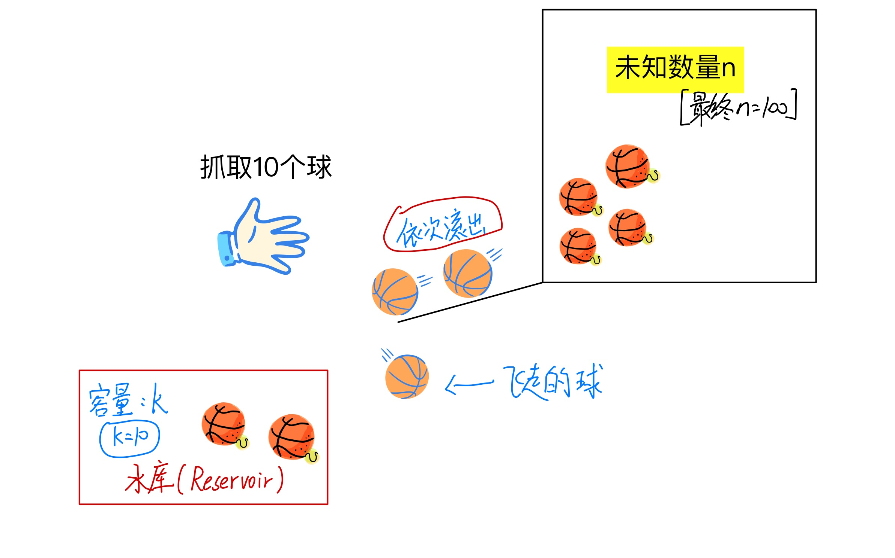

连续学习中的蓄水池抽样算法(The Illustrated Reservoir sampling).
前言
技术性文章决定还是用中文来写，便于理解。近期在看连续学习中有关于Replay Method的文章时，在对数据流的采样中，reservoir sampling方法出现了很多次1。本文将对该方法进行梳理，并给出python实现的案例。特别感谢邱simple2
什么是Reservoir Sampling？
Reservoir Sampling直白翻译过来就是“蓄水池抽样”，非常具象化。维基百科定义如下3：
Reservoir sampling is a family of randomized algorithms for choosing a simple random sample, without replacement, of k items from a population of unknown size n in a single pass over the items. The size of the population n is not known to the algorithm and is typically too large for all n items to fit into main memory. The population is revealed to the algorithm over time, and the algorithm cannot look back at previous items. At any point, the current state of the algorithm must permit extraction of a simple random sample without replacement of size k over the part of the population seen so far.
直白翻译过来就是，我们的蓄水池抽样算法(Reservoir sampling)是随机抽样算法的一种，即我们要从一组长度为n的数据中抽样出k个样本出来。但是呢，它的不同之处在于，它抽样的数据是一组未知长度的数据流(莫疑惑，在数据流完之前，你是不知道这个长度n的具体数值的)，而且这个数据流只流通一次，无法再返回去抽样。也就是说，你必须在数据流通的过程中，去抽样出k个样本出来，且保证所有数据被抽中的概率都是等概率的，即\(k/n\)。
更进一步的理解， - 平常的抽样方法：平常的抽样方式是假定有100个小球，你从100个小球里面抽10个小球出来，那么我们就从1-100取10个随机数就可以，且确保了每个小球被取到的概率都是\(1/10\)。 - 蓄水池抽样算法(Reservoir sampling)：与我们平常的抽样方式不同，蓄水池抽样算法(Reservoir sampling)则是假定有一个大黑盒子(你不知道里面有多少个)，小球慢慢从盒子里面一个一个滚出来，而你只需要抓取10个小球，随着时间的推移，大黑盒子里面的小球都滚完了(你此时才知道滚了100个球出来，且对于滚远的球，你不能再去抓取了)，同样你也完成了取样的10个球，且需要确保了每个小球被取到的概率都是\(1/10\)。
总结如下： 给定一个数据流，数据流长度N很大，且N直到处理完所有数据之前都不可知，请问如何在只遍历一遍数据（O(N)）的情况下，能够随机选取出m个不重复的数据，且每个数被选中的概率为\(m/N\)。
如图所示： 
蓄水池抽样算法(Reservoir sampling)具体实现：
Algorithm R：
由Alan Waterman4最初提出的一种简单但慢的实现方式。算法伪代码图如下所示：
证明Algorithm R每个样本被取到概率相同：
可以用数学归纳的方法来证明。
数学归纳法原理：
例如：你有一列很长的直立着的多米诺骨牌，如果你可以： 1. 证明第一张骨牌会倒。 2. 假设只要任意一张骨牌倒了，证明与其相邻的下一张骨牌也会倒。
那么便可以下结论：所有的骨牌都会倒下
证明过程： 因此， 对于\(i \geq k\)，我们需要假设在第\((i+1)\)个数据来之前，reservoir中的数据被选中的概率是\(\frac{k}{i}\)；在第\((i+1)\)个数据来之后，证明reservoir中的数据被选中的概率是\(\frac{k}{i+1}\)；这样根据数学归纳的方法，可以得到结论，当第\(N\)个数据来之后，reservoir中的数据被选中的概率是\(\frac{k}{N}\)。
证明： 首先假设，对于\(i>k\)，在\((i+1)\)个数据来之前，reservoir中的被选中的数据的概率为\(\frac{k}{i}\)。
则当第\((i+1)\)个数据来时，\(x_{i+1}\)被选中的概率为\(\frac{k}{i+1}\)，且\(x_{i+1}\)会替代掉原有的k个候选数据中的一个，替代掉的概率为\(\frac{k}{i+1} \frac{1}{k}=\frac{1}{i+1}\)。则原有保存在reservoir内的数据仍被保存在reservoir内的概率为\(\frac{k}{i}\times \left(1-\frac{1}{i+1} \right) = \frac{k}{i+1}\)。则可得证。
因此可得到结论，当第\(N\)个数据来之后，reservoir中的数据被选中的概率是\(\frac{k}{N}\)。
Distributed/Parallel Reservoir Sampling (并行蓄水池抽样算法)5
上述由Alan Waterman6等人提出的方法虽然实现了对数据流的抽样，但是对于超级庞大的数据流，即使时间复杂度为O(N)，整个抽样流程也相当耗时。因此，利用分布式的硬件进行并行化处理，才是高效率主流的应用方式。
思考：如何才能并行化处理数据流呢？
可以把数据流分成多部分，分别在不同的机器上运算，各自获取自己的reservoir。之后根据不同机器上获取的数据流的长度，再按照比例从不同的机器上的reservoir进行抽样。
举例有3台机器，则把数据流\(N\)给切为三部分，即\(N_1,N_2,N_3\)分别流向不同的机器，\(N_1+N_2+N_3=N\)，在不同的机器上抽样完后获得的reservoir分别为\(R_1,R_2,R_3\)，因为我们事先不知道数据流的规模，只能对所有分支数据流都默认抽样\(k\)个样本，即\(|R_1|=|R_2|=|R_3|\)，之后按照\(N_1,N_2,N_3\)的比例，从\(R_1,R_2,R_3\)中再进行按比例抽样，组成最终的reservoir，\(R\)。
相关代码(后面用到时会补充进去)
- 挖坑 # 应用场景
连续学习是个很好的应用场景，因为连续学习的数据流和蓄水池抽样算法的数据流的要求几乎完全一致！因此，在很多连续学习方法中，蓄水池抽样是一个必不可少的环节。
总结
蓄水池抽样算法诞生于1985年，抽样方式的确很简单，也很巧妙，非常简单美。
引用及感谢
Jeffrey S Vitter. Random sampling with a reservoir. ACM Transactions on Mathematical Software (TOMS), 11(1):37–57, 1985.↩︎
蓄水池抽样算法（Reservoir Sampling）: https://www.jianshu.com/p/7a9ea6ece2af↩︎
Reservoir sampling : https://en.wikipedia.org/wiki/Reservoir_sampling↩︎
Jeffrey S Vitter. Random sampling with a reservoir. ACM Transactions on Mathematical Software (TOMS), 11(1):37–57, 1985.↩︎
Distributed/Parallel Reservoir Sampling: https://ballsandbins.wordpress.com/2014/04/13/distributedparallel-reservoir-sampling/↩︎
Jeffrey S Vitter. Random sampling with a reservoir. ACM Transactions on Mathematical Software (TOMS), 11(1):37–57, 1985.↩︎